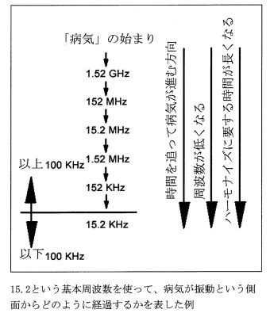

ドイツの振動医学・・パウルシュミット式バイオレゾナンス（自動測定機能）
振動医学とは
振動医学とは、新しい振動理論に基づく健康法です。
マクロ的な大宇宙から、超ミクロの素粒子の世界まで、あらゆるところに「振動」は存在しています。その振動の共鳴現象にはじめて注目したのがドイツのパウル・シュミットでした。
シュミットは、生きた身体、つまり私たちの生体でこの共鳴現象が起こると身体をコントロールしている生命エネルギーに”変化”が起こることを突き止めました。それがバイオレゾナンス理論であり、その理論を健康法として応用したのが、バイオレゾナンス療法（生体共鳴法）です。
私たちの身体は、単なるモノとしての臓器の集まりではなく、生きている臓器、組織にはモノにはない「いのち」があり、すべての臓器、組織を貫いて全身に流れる「いのち」＝ライフパワー全体を、肉体の「ボディ」に対して「エネルギーボディ」と呼びます。
わかりやすくは、豆電球を無数に連ねたクリスマスのイルミ
ネーションを思い浮かべてください。まだ電気が流れていな
いとき、あるいはスイッチが切れて流れが止まってしまうと、
豪華なイルミネーションも単なる豆電球の集まりにすぎませ
ん。しかしそこに電気(ライフパワー）が流れ出したとたん、
豆電球（細胞）の1つ1つが明るく灯り、イルミネーションと
して輝きはじめます。1つ1つの輝きの正体は、電球ではあり
ません。電気が今そこを流れている、その現象が灯りです。無数の灯りがつくりだす、美しいイルミネーション全体の輝きーそれがエネルギーボディであると考えてください。しかし、何らかの原因で流れる電気が弱すぎたり、どこかでショートしたりすると、灯りが十分でなかったり、電球のフィラメントが切れたりします。
病気や症状の大半は、それと同じようにライフパワーの流れが衰えたり、流れを止めるエネルギー的障害が発生することで起こる、と振動医学は考えるのです。
身体に備わった免疫力や抵抗力・排出機能・無力化作用がしっかり働いている間は健康です。つまりエネルギーボディが充実し、ライフパワーが全身の臓器や細胞をしっかり支えている間は健康です。しかし、生命力、つまりエネルギーボディのパワーが弱まると、正気（ライフパワー）に抑えられていた邪気（マイナス要因）が頭をもたげてきます。コントロールのきかなくなったガン細胞のように徐々に勢いを増していく。その結果として、症状や病気があらわれてきます。いのちを与えているエネルギーボディ「微細なカラダ」に何らかのトラブルが生じ、それが原因となって「粗大なカラダ」の肉体（ボディ）にさまざまな症状や病気が起きてきます。
振動医学が対象にするのは、エネルギーボディです。バイオレゾナンス療法が目的としているのは、病気を治したり症状を取り除いたりすることではないのです。
身体に生じた障害を解消することで正常な生命エネルギーの流れを回復し、健全な生命力を引き出すことを目的としています。
①エネルギー的な障害の有無を調べること
②そのエネルギー的障害を解消すること
③エネルギー的障害をつくった原因を明らかにし、原因を除去すること
④生命エネルギー「気」の流れをより健全なものにすること
現代医学は「病気を治す技術」です。しかし、最近は高血圧や糖尿病、動脈硬化など、治せない病気が圧倒的に多くなり、現代医学でも”予防”が強調されるようになりました。予防医学とは、別の言い方をすれば、「病気にならない技術」と言えるでしょう。一方、バイオレゾナンス療法は、エネルギーボディに秘められた生命力を最大限に引き出し、その力で健康を回復する「治る技術」です。
引用：最新ドイツ波動健康法 ヴィンフリート・ジモン
パウルシュミット式バイオレゾナンス療法

最新版 レヨコンプPS1000ポラー4.0（自動測定機能装備）を導入！
身体に変調をきたす生命エネルギー「気」の滞り（エネルギー的障害）を自動測定（STI）でチェックし、その結果をもとに、自動的に振動調整プログラムを作成します。これによって非常に素速いアプローチで、おひとりおひとりの状態にあったオーダーメイドプログラムを探すことができます。
レヨコンプPS1000ポラーで測定する「気の滞り」は、高い周波数から低い周波数まで
キャッチできます。
高い周波数から「気の滞り」が検知できるということは、私たちの身体に症状が現れる前あるいは身体の異常に気づく前からわかるということです。
医療機関で診断できるよりもずっと早く問題を指摘することができます。
そして、その異常に対して振動調整をすることによって、振動的な解消を試みることができます。
つまり、様々な原因でズレてしまった周波数を、人が持っている本来の周波数に調整し直し、スムーズな気の流れを取り戻して本来の自然治癒力や生命力を引き出すことで症状を緩和したり解消したりするものです。
バイオレゾナンス療法は、この健康・不健康を決める「気の滞り」（エネルギー的障害）を解消することを目的としています。
実際に身体に病気や不調の自覚症状や各種検査で数値の異変が現れる前の段階、つまり「未病」の段階で、異変を波動的にチェックし探り出して、早めに対処することができるのです。
「気の滞り」が見つかっても、振動調整されないままでいると「気の滞り」が進行して段々に周波数は低下していきます。こうしていつか周波数が100kHz以下になると、この病気が普通の現代医学で診断することができるようになります。周波数が減少すると振動調整の所要時間も長くなります。早期発見と振動調整がいかに大事であるかはっきりします。定期的に振動調整されていると、レゾナンスのスペクトルが100kHz以下になることがありません。そのため予防のためのすばらしい可能性ということになります。
引用：パウルシュミット式バイオレゾナンス ディートマー・ハイメス著
《自動測定》
身体を循環する生命エネルギー（気の流れ）の状態を調べ、どこかに気の滞りがないかを自動的に測定し、その結果から振動調整プログラムを作成します。
《振動調整》
見つかった気の滞りの周波数の波を送り続けることで、気の滞りが解消されて、本来のスムーズな気の流れが安定し、全身の状態を整えます。細胞や各種器官や組織の生命力を高めて、本来持っている自然治癒力を引き出すことにより、病気発症予防、健康維持、および病気や症状からの回復をサポートします。
※ここで行われる内容は、「病気の診断」「病気の治療」とは違います。
振動医学、量子医学の中で行われる振動的な測定と調整です。
◆測定結果により、振動調整の頻度や回数は決まります。
効果はすぐに出るものではなく、定期的に受けられることで効果的となります。
〈適合性チェック〉
体内環境、脳内環境、有害電磁波やジオパシックストレス、有害科学物質、ウィルス、細菌などからの影響の有無、サプリメントや化粧品などの適合性などもチェックできます。
バイオレゾナンス療法は、病気の治療を目指すものではなく、あくまでも本来の生命力が引き出されることを目的としています。病気の症状が改善されることや健康が回復することは、生命力が向上した結果としてのひとつの現われとパウル・シュミットは考えます。現代医学には、医薬品で症状を抑えたり、手術によって状況を改善するなど、即効性という利点があります。バイオレゾナンス療法は、もともとある内なる治癒力を働きやすくするので、安全性の高さが利点です。どちらかひとつ選択するというのではなく、両方の良さを認めて上手に利用できれば、私たちは様々な悩みから解放され、より健康的な人生をおくれるのではないでしょうか。
このバイオレゾナンスによる測定・調整は、ディテクタという布のベルトをつけていただき、ソファまたはベットでゆっくりとおくつろぎいただきながら受けていただきますので、身体に全く負担がなく、寝てしまわれる方もいらっしゃいます。
ドイツ振動医学で病気の原因（エネルギー的障害）をつくるとされているもの
体調不良の原因は、以下の生活習慣や環境に起因します。
①化学物質（農薬・殺虫剤・防腐剤・食品添加物・薬品など）の影響
②潜在汚染（ウィルス・細菌・カビ・寄生虫など）の影響
③金属汚染（水銀・鉛・アルミニウム・パラジウムなど重金属）の影響
④電磁波障害（携帯電話・家電製品・パソコン・コードレスフォンなど）の影響
⑤ジオパシックストレス（水脈・断層・グリッドの放射帯）による影響
⑥心理的・精神的ストレスの影響
⑦その他の影響
もともと身体に備わった免疫力や抵抗力、排泄機能、解毒作用などが問題なく働いている間は、私たちは大きく健康を損なうことはありません。しかし、健康を害する上記のような危険因子が実際に身体を害するまでに至るのは、肉体ではなく生命エネルギー体としての力（ライフパワー）が弱まったときです。
東洋医学では、病気は危険因子（邪気）とエネルギーボディを流れるライフパワー（正気）の力関係によって決まるとされます。また人体を害する生物や物質の多くは、モノとしてだけでなく振動的にもマイナスの作用を及ぼします。そういう危険因が体内に増えるほど、私たちのエネルギーボディが影響をうけることになります。マイナス波動の蓄積がある程度を超えれば、病気や症状となって現れます。
そこで健康を守り、病気を防ぐには、
1.健康を支える気を強める。
2.有害な気を取り除く。
この2つが重要になってきます。
この目に見えない「気」や「生体エネルギー」を振動というカタチ（周波数）に「見える化」して振動送波器（振動測定器）で簡単に扱えるようになったバイオレゾナンス療法を取り入れる医師や医療施設が増えておりその効果を科学的に確認、証明する研究も進められ、ドイツをはじめとするEUではこの測定に使用されている機器は医療機器として認められています。しかし、現代の標準的な医学によって認められたものではありません。なぜなら基本となる考え方が、現代医学とは根本的に異なっているからです。
引用：最新ドイツ波動健康法 ヴィンフリート・ジモン
こすもす鍼灸治療院
〒889-1609
宮崎市清武町あさひ1-59
TEL 0985-77-8955